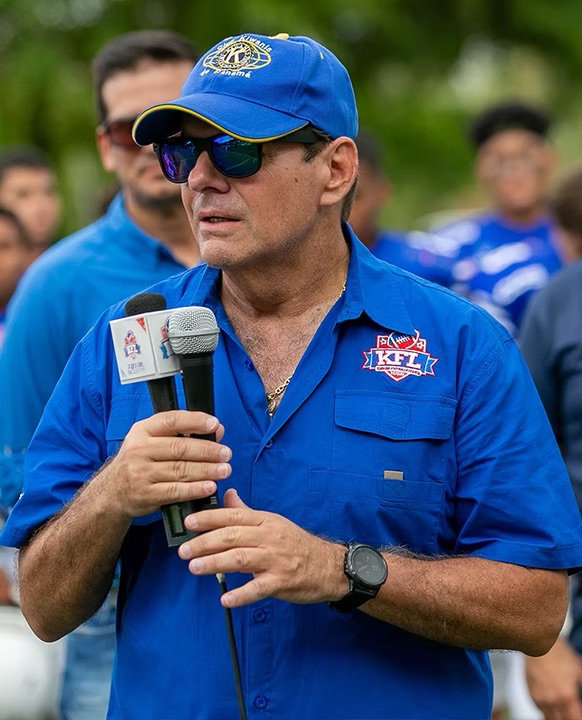

1967
Se funda El Club Kiwanis de Panamá, una sociedad civil sin fines de lucro fundada en Panamá por iniciativa del Arq. Gustavo Rosania.
Conoce la historia de la Kiwanis Football League desde sus inicios hasta la actualidad.

Como miembro del Club Kiwanis de Panamá, ha sido Presidente, Vicepresidente, Secretario, Vocal y Asesor de la Junta Directiva en varios periodos.
Nuestra Liga de Football Americano Kiwanis se ha convertido en un Programa Escolar Pionero. Ofrecemos dos ligas, la de Contact Masculino y la de Flag Femenino. Con categorías para football americano desde Micro, Mini, Juvenil y Varsity, y en flag football empezando desde Micro, Mini, Juvenil y Varsity. Nos enorgullece que actualmente contamos con un aproximado de 1,600 jugadores.
En Football Americano, la categoría Micro va desde 7 a 9 años, la Mini desde 10 a 12, la Juvenil desde 13 a 15, y la Varsity desde 16 a 18 años. Para Flag Football empieza con la categoría Micro va desde 7 a 9 años, la categoría Mini desde 10 a 12, la Juvenil desde 13 a 15, y la Varsity que es desde 16 a 18 años. Para cada categoría la Liga tiene un promedio de tres meses, que están conformados por 12 partidos.
Contamos con un grupo de entrenadores entregados al deporte para los jóvenes jugadores. Hoy podemos decir con gran orgullo que tenemos 120 entrenadores todos certificados por USA Football, entidad que regula las ligas de Youth Football de Estados Unidos.
Kiwanis es el único programa fuera de Estados Unidos que tiene todos sus entrenadores certificados, como exigencia para poder ser entrenador de cualquier equipo en las Ligas Kiwanis.
Todos los años conformamos una Selección con los mejores jugadores de las categorías Mini y Juvenil en ambas ligas para representar a Panamá en torneos internacionales conocidos como los “Panama Sharks”. Hemos viajado seis años seguidos a representar a nuestro país en Torneos Internacionales a: Cancún, Puerto Rico, Tampa Florida, Miami Florida, Las Vegas, Daytona Florida, México DF y se mantienen invictos en la categoría Juvenil.
No solo cumplimos con la comunidad al darle otra alternativa de deporte a nuestra juventud, los alejamos de las malas costumbres, sino que trabajamos de la mano con las escuelas participantes con la parte académica. Asesoramos a los jugadores, nos convertimos en sus consejeros, y creamos una gran familia.
Se funda El Club Kiwanis de Panamá, una sociedad civil sin fines de lucro fundada en Panamá por iniciativa del Arq. Gustavo Rosania.
Con la administración del Ing. Mario Rognoni (QEPD), el Club Kiwanis de Panamá organizó dos equipos juveniles de fútbol americano, para que participaran en el Canal Zone League donde jugaban diferentes equipos de las bases militares de los Estados Unidos acantonadas en Panamá.
Los Kiwanis Kolts se consagran bi-campeones del football americano y comienza el sueño de Panamá.
Con la firma de los Tratados Torrijos-Carter, se van los Americanos de Panamá. La Liga se debilita y se reducen los equipos. Cierra la liga de la Zona del Canal y se abre la Liga organizada por Panajuru que dura pocos años.
Bajo la Presidencia de Raúl Méndez de Obarrio, el Club Kiwanis retoma el deporte y la liga se juega con solo cuatro equipos de Panamá en la categoría mayor. Todos bajo el primer nombre “Kiwanis”: Kiwanis Kolts, Kiwanis Knights, Kiwanis Kobra y Kiwanis Kings.
Se hace una reingeniería de la Liga. Migra hacia una liga intercolegial.
Entran los Raiders del Colegio Brader y los Tigers del Instituto Don Bosco.
Entran los Spartans de La Salle.
Entran los Titans de la comunidad hebrea liderizada por el Instituto Alberto Einstein.
Entran los Dragons de la escuela de Balboa Academy.
Entran los Redskins del San Vicente de Paul. Se inaugura la Categoría Mini con 7 equipos: Kiwanis Kolts, AIP Fighting Owls, San Vicente Redskins, La Salle Spartans, Alberto Einstein Titans, Balboa Dragons y Brader Raiders.
Se inaugura la Categoría Micro con 10 equipos: El Chino Panameño, la AIP saca 2 equipos, Kolts, Raiders, Spartans, Titans, Balboa, Oxford, Red Lions y Redskins.
Se inaugura la Categoría Varsity, con jugadores de 16 a 18 años de edad y peso ilimitado.
Se inaugura Flag Football Femenino en la Categoría Juvenil con la participación de 7 equipos.
Se inaugura en Flag Femenino la Categoría Varsity con 7 equipos.
Se inaugura en Flag Femenino la Categoría Mini.
Los Panama Sharks U18 participaron del International Bowl, organizado por USA Football y hacen historia, ganándole al combinado de Estados Unidos por 30-25.
La liga sigue creciendo. Se lanzan las Sharks de flag football femenino por primera vez en un partido Internacional con sede en Panamá contra Querétaro México.
La Liga de flag football femenino migra del formato 8vs8 a formato 5v5 con reglamentación IFAF (International Federation of American Football) y debutan los Eagles del Colegio de Panamá en la categoría Varsity Contact.